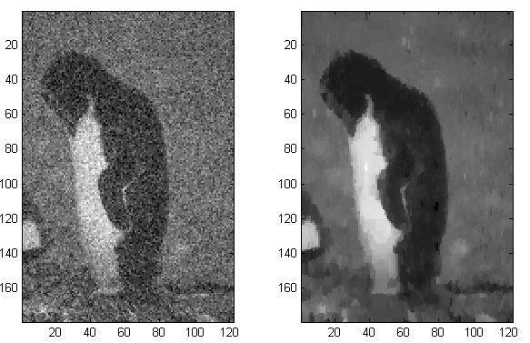

Just finished the final of convex optimization. This is really an interesting course, which even changed the way I'm looking at this world. In college, I was thinking in an algorithmic way, i.e., to solve a problem, will try to design some certain steps, following which we can get a result somehow satisfying our expectation. But now, I'd first spend quite a bit time on the expectation itself, expressing them in the way "what to minimize" and "subject to what constraints". Then simply feed them to convex optimization solvers.
That is, convex optimization provides a general modeling language, with which it can be ensured to get an answer efficiently. It makes the modeling process intuitive and effective, and is the most important practical branch of mathematics in my humble opinion.
I used image denoising as the example for quite a few algorithms in the blog [post1, post2, post3], and demonstrated how different algorithms help improve the performance. But what if we treat it as a optimization problem? We wish to have less effort to fix/change the image, and the fixed image tends to have smoother changes, i.e. less variations. This is a typical problem named total variation reconstruction, trying to minimize a weighted sum of some L1 norms, and it's convex! By writing 4 lines of MATLAB code, we get this result:

The left one is the noisy image, while the right is the recovered one. Compared with the result from Loopy Belief Propagation, the improvement is obvious. So we can see that the optimization approach is intuitive to model, fast to implement, and easier to debug. The code written with CVX, a MATLAB convex optimization package, is put as follows for the record. We can see how elegant it is.
cvx_begin
variable x(h, w);
minimize norm(x - img, 1) + norm(x(:, 2:w) - x(:, 1:w-1), 1) + norm(x(2:h, :) - x(1:h-1, :), 1);
cvx_end
As a heavy .NET user, I tried to find .NET version of optimization problem solvers (due to licensing issues of MATLAB). Microsoft Solver Foundation looks a good candidate, also supporting a neat and expressive language named OML just like CVX does, and free for academic users. But I still haven't figured out how to use it. Gurobi looks simple and powerful too, although haven't tried it. Anyway, CVX is certainly a good start point.
If you get interested in convex optimization, Steven Boyd's course Convex Optimization is definitely a good (possibly the best) resource, with the textbook also from Steven here. If don't feel like much theory, skimming the exercises in the book and the additional exercises about your area may be enough.
Comments